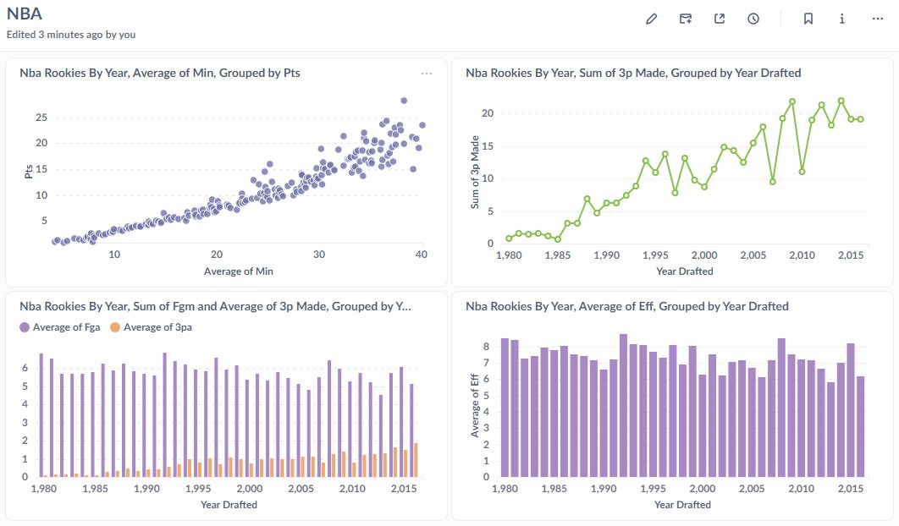

Languages
- C
- Python
- Java
- JavaScript
- SQL
- HTML
- CSS
Open to new opportunities
A graduate developer who builds IoT devices
Well versed in C, Python, Java/JavaScript, CSS, HTML and SQL — from low-level CPU simulation to IoT hardware, computer vision and data dashboards.
01 — About
I'm a Computer Engineering Technology graduate who enjoys working across hardware and software: writing a MIPS assembler in C, wiring sensors on a Raspberry Pi to a live Android app, training object-detection models, and writing an HTTP server from scratch in C.
I like projects where I get to learn something new, and I care about writing code that's clear, tested and easy for the next person to pick up.
02 — Skills
03 — Projects
01 · IoT & real-time · Live demo
The software layer my Raspberry Pi capstone was missing: a validated ingest API, two-point calibration from raw sensor values to grams and pH, visit detection, alerts with hysteresis, history storage, and a live WebSocket dashboard. A demo mode runs right in the browser.
02 · Systems programming
A multithreaded HTTP/1.1 server written from scratch in C, with a bounded work queue and back-pressure, keep-alive and pipelining, and path-traversal defences. I benchmarked it with my own load tester: ~9,900 requests/s and 0 errors across about a million requests.
03 · Computer architecture · Live demo
A two-pass assembler and step-through CPU with 50+ instructions, breakpoints, and live register and memory views. It grew from my C lab series. I finished the execute stage, fixed three design bugs from v1, and kept the original instruction encodings.

A static team mockup rebuilt as a real app: REST API, SQLite, hashed-password sessions, a searchable library and reorderable playlists.
Read the case study
An object detector that marks free and occupied spaces in aerial photos: 89.4% mAP@50 and 91% precision after 25 epochs.
Read the case study
A Raspberry Pi with four sensors on a custom PCB, reporting to Firebase and an Android app. I built the presence-detection sensor.
Read the case study
A Java telnet command server with a thread pool, deployed as a systemd service on Linux.
Read the case study
35 draft classes of rookie stats analysed with SQL in Metabase, showing the rise of the three-point shot.
Read the case studyFour sorting algorithms in Java, timed against each other, with an interactive visualizer and a live benchmark.
Try the visualizer04 — Contact
I'm currently looking for new roles and interesting projects. Whether you have a question or just want to say hi, my inbox is open.
Say hello